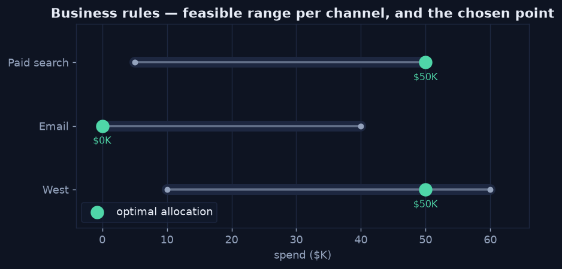

Business Rules & Constraints
Chapter 2 — Encode the Limits
Real decisions live inside rules: minimum commitments, contractual caps, channel saturation, policy floors. Prescriptive analytics encodes these as explicit constraints so the recommendation is not just profitable but allowed. A plan that maximizes return by pouring the entire budget into one channel is worthless if a contract caps that channel at $50K.
The Rules for This Decision
- Total budget: spend at most $100K.
- West: between $10K (minimum commitment) and $60K.
- Email: up to $40K (audience saturates beyond that).
- Paid search: between $5K and $50K (contracted ceiling).
Python · constraints as data
# Each channel gets a (min, max) feasible range
bounds = [(10_000, 60_000), # West
(0, 40_000), # Email
(5_000, 50_000)] # Paid search
budget = 100_000 # sum(spend) <= budget
Each channel's feasible range (the bar) and the chosen allocation (the point) — every recommendation must land inside these limits.
Rules Without Optimization
Not every decision needs a solver. Many prescriptive recommendations are simple, deterministic
rules — and SQL expresses them directly. A CASE statement encodes the policy and
produces a recommended action per row, no model required.
SQL
SELECT
region,
AVG(profit / sales) AS avg_margin,
CASE
WHEN AVG(profit / sales) < 0.10 THEN 'Cut discounts'
WHEN AVG(discount) > 0.20 THEN 'Review pricing'
ELSE 'Hold'
END AS recommended_action
FROM orders
GROUP BY region;Why Constraints Come First
Defining the feasible region before optimizing is what separates a usable recommendation from a fantasy. The constraints shrink the space of possible plans down to the ones the business can actually execute — and only then does it make sense to search that space for the best one. That search is the next chapter.